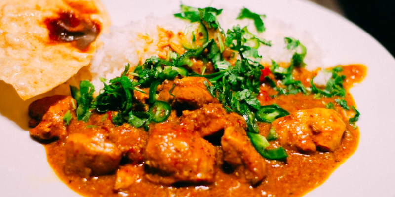

preparation, precisely, starting every
dish from scratch.
1. India is the Spice Capital of the World.

India produces more than 70 percent of the spices used in the world. It has a greater variety of spices than any other country. Black pepper is considered the “king” spice, dating back as early as 2,000 B.C.E. In ancient times black pepper was highly prized, almost regarded as black gold. Although salt is found in many places around the world, black pepper is indigenous to a province in South India..
2. There Are Over 200 Indian Desserts.

Indian desserts and sweets are often called Mithais. Although many buffets focus on Kheer, a traditional rice pudding, or Gulab Jamun, Indian milk balls served with honey syrup, there’s a wide variety of desserts in the country. The most traditional desserts are made with fruit and honey because it was the Portuguese who introduced sugar to the country.
3. Not Everyone in India Is Vegetarian.
Although India does have low rates of meat consumption per person, only about 29 percent of the population follows a strict vegetarian diet. Goat, chicken, and lamb are popular meats used in many dishes. Seafood is also popular in coastal areas..
4. A Cook’s Reputation Is Often Based on Their Curry.

An excellent Indian curry balances spices in perfect proportion. Every cook has its own blend. Every region has different characteristics of a good curry. Incidentally, the word curry is rarely used in India.
5. Chai Is an Ancient Drink.

An excellent Indian curry balances spices in perfect proportion. Every cook has its own blend. Every region has different characteristics of a good curry. Incidentally, the word curry is rarely used in India.
TRENDING FACTS